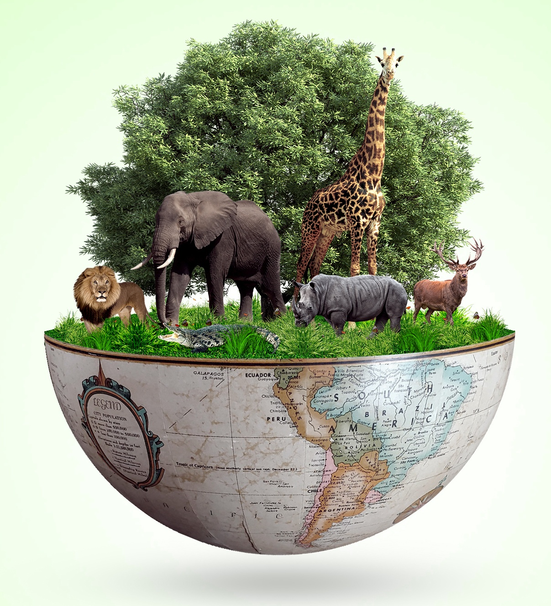
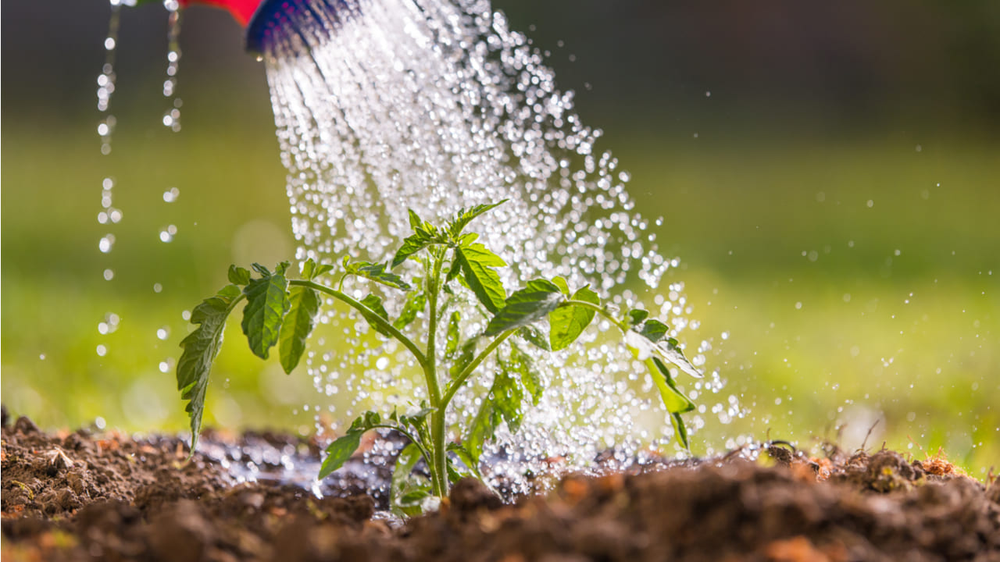

Preservar a vida na Terra é essencial para um futuro sustentável.
O que são os ODS?
As ODS (Objetivos de Desenvolvimento Sustentável) são uma série de metas estabelecidas pela Organização das
Nações Unidas (ONU) para erradicar a pobreza, proteger o planeta e garantir prosperidade para todos. São 17
objetivos globais que visam abordar os principais desafios do desenvolvimento sustentável.
Objetivo 15: Vida Terrestre
O Objetivo de Desenvolvimento Sustentável 15 (ODS 15) da Organização das Nações Unidas (ONU) tem como foco
proteger, restaurar e promover o uso sustentável dos ecossistemas terrestres. Isso inclui gerenciar de forma
sustentável as florestas, combater a desertificação, travar e reverter a degradação dos solos e
biodiversidade ¹.
Metas do ODS 15:
- Conservação e Uso Sustentável: Assegurar a conservação, recuperação e uso sustentável dos ecossistemas
terrestres e de água doce interiores, especialmente florestas, zonas úmidas, montanhas e terras áridas ¹.
- Gestão Florestal Sustentável: Promover a implementação da gestão sustentável de todos os tipos de
florestas, deter o desmatamento, restaurar florestas degradadas e aumentar o florestamento e reflorestamento
global ¹.
- Combate à Desertificação: Combater a desertificação, restaurar terras e solos degradados, incluindo áreas
afetadas por secas e inundações .
- Proteção da Biodiversidade: Tomar medidas urgentes para reduzir a perda de biodiversidade, proteger
espécies ameaçadas e prevenir a extinção.
Ações para Alcançar o ODS 15:
- Implementar políticas de conservação e uso sustentável dos ecossistemas terrestres.
- Promover práticas de gestão florestal sustentável.
- Combater a desertificação e restaurar terras degradadas.
- Proteger espécies ameaçadas e prevenir a extinção.
- Educar e conscientizar a população sobre a importância da proteção da vida terrestre.
O ODS 15 é fundamental para garantir um futuro sustentável para todas as formas de vida no planeta. É
importante que governos, organizações e indivíduos trabalhem juntos para alcançar essas metas.
Importância da Biodiversidade

Alguns pontos importantes sobre a Biodiversidade são:
Ecológica: Regula clima, ciclo de nutrientes e controle de pragas.
Econômica: Fornece recursos, gera receita via ecoturismo e inspira inovações.
Social: Significado cultural, garantia de saúde e segurança alimentar.
Científica: Fonte de conhecimento e desenvolvimento tecnológico.
Ética: Direito à existência das espécies e responsabilidade moral.
Proteger a biodiversidade é essencial para:
Equilíbrio ecológico
Desenvolvimento sustentável
Saúde humana
Economia
Cultura e tradição
A perda de biodiversidade pode causar:
Extinção de espécies
Degradação de ecossistemas
Perda de serviços ecossistêmicos
Impactos negativos na saúde e economia
Ações e Soluções para Proteger a Vida Terrestre.
Ações para Proteger a Vida Terrestre
Combater o Desmatamento
Reduzir o desmatamento ilegal e incentivar práticas agrícolas sustentáveis.
Usar madeira e recursos naturais de forma responsável.
Conservar Água e Solo

Proteger fontes de água e promover o uso eficiente de água.
Evitar a erosão do solo com práticas agrícolas adequadas.
Proteger a Fauna e Flora
Criar corredores ecológicos para permitir a migração de animais.
Combater o tráfico de animais e plantas.
Reduzir a Poluição
Diminuir o uso de plásticos e promover a reciclagem.
Reduzir emissões de poluentes e adotar energias renováveis.
Promover Consumo Sustentável
Comprar produtos de empresas comprometidas com o meio ambiente.
Optar por alimentos orgânicos e locais.
Educação e Conscientização
Educar sobre a importância da biodiversidade e sustentabilidade.
Incentivar atitudes ecológicas no dia a dia, como economizar água e energia.
Fortalecer Leis Ambientais
Criar e aplicar leis para proteger a natureza.
Participar de acordos internacionais para conservar a biodiversidade.
Apoiar Empresas Sustentáveis
Incentivar empresas a adotar práticas ecológicas.
Investir em tecnologias limpas e soluções verdes.
Atitudes Individuais
Reduzir, reutilizar e reciclar.
Optar por transportes sustentáveis, como bicicleta ou transporte público.
O que Você Pode Fazer
Você pode ajudar protegendo a biodiversidade de várias formas: plantar árvores, apoiar organizações
ambientais, reduzir o consumo de plásticos, adotar práticas sustentáveis em sua vida cotidiana e muito
mais.
para mais informações clique no link do vídeo abaixo.